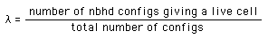
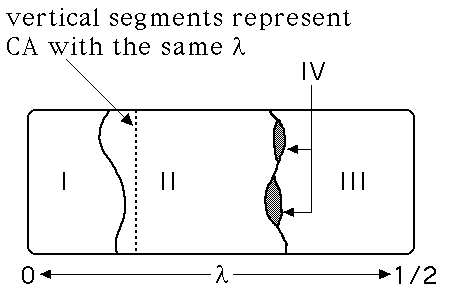

| Several methods have been proposed for predicting CA behavior. One is
the λ parameter developed by
Langton. For
binary CA, λ is defined as |
|  |
| We consider only λ in the range 0 ≤ λ ≤ 1/2,
because every CA with λ > 1/2 corresponds to a CA with
λ < 1/2 after interchanging the roles of live and dead cells. |
| As λ increases, CA generally go through the Wolfram classes in this
order: |
| I, II, IV, III. |
| That is, class IV is on the boundary between class II (order) and
class III (chaos). |
| There is a critical value λc around which
class IV exist. The width of the region shrinks as the total number of nbhd configs
increases. |
| These examples illustrate this relation between λ and the
Wolfram classes. |
| Click each picture for a larger version and the rule. |
|
| Note as λ increases, the CA pass through class II, class IV, then class III. |
|  |
| Some theorists, particularly Langton and Kauffman, use this observation
together with the life-like behavior exhibited by class IV CA, to assert life occurs
at the edge of chaos. |
| Another experimental observation is that as λ → λc,
CA exhibit longer and longer transients,
that is, they take longer and longer to settle down to their eventual behavior. |
| Langton asserts that living systems are class IV automata, balanced between order and chaos. Living
creatures maintain themselves in class IV by using the very long transients near
λc. |
| In the time → ∞ limit, there may be no class IV automata: all
observed class IV behavior may be transient. |
| Corollary: Immortality is impossible. |